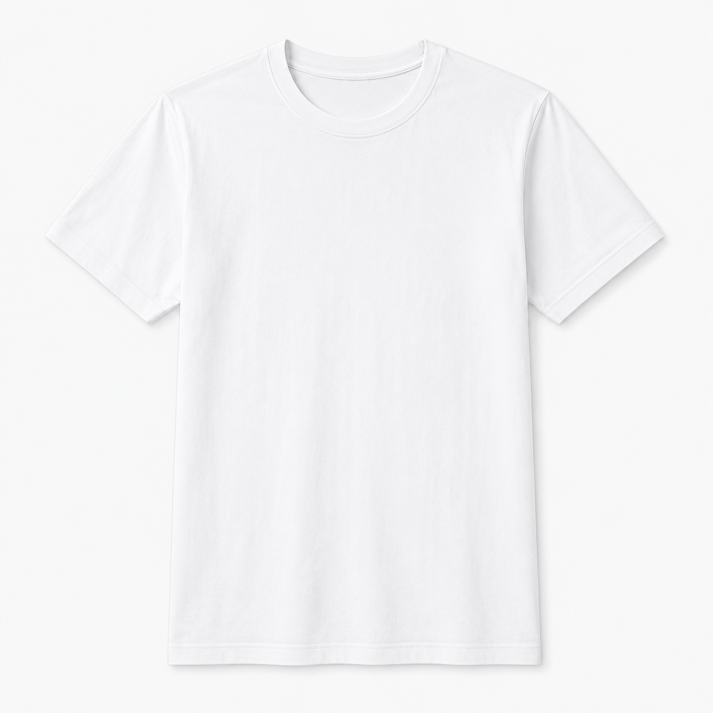

Step 0 / 5
マーケティング調査
ECサイトの「お気に入り機能」に関する調査
この調査では、ECサイトの商品ページを見たときに、 「お気に入り登録」機能が購入判断にどのような影響を与えるのかを調べます。
回答は研究・発表準備の目的で使用します。
個人が特定される情報は収集しません。
所要時間は約2〜3分です。
Step 1
お気に入り機能の利用について
Q1. あなたはECサイトで「お気に入り」「いいね」「あとで見る」などの機能を使ったことがありますか？
Step 2
お気に入り機能を使う目的について
Q2. お気に入り機能を使う目的として、当てはまるものをすべて選んでください。
Sample Store
架空ECサイト

Fashion / T-shirt
シンプル白Tシャツ
¥2,980
春夏に使いやすい、シンプルな白Tシャツです。 普段使いしやすく、ジャケットやシャツのインナーとしても使用できます。
送料無料
最短2日でお届け
返品可能
Step 3
商品ページを見た後の感じ方について
以下の項目について、あなたの考えにもっとも近いものを選んでください。
Step 4
実際の経験について
Q4. ECサイトで「あとで買おう」と思ってお気に入りに入れた商品を、結局買わなかった経験はありますか？
Step 5
購入を促す機能について
Q5. 次のうち、「今すぐ買おう」と思いやすい機能をすべて選んでください。
完了
ご回答ありがとうございました
以上で調査は終了です。ご協力ありがとうございました。
回答が完了しました。